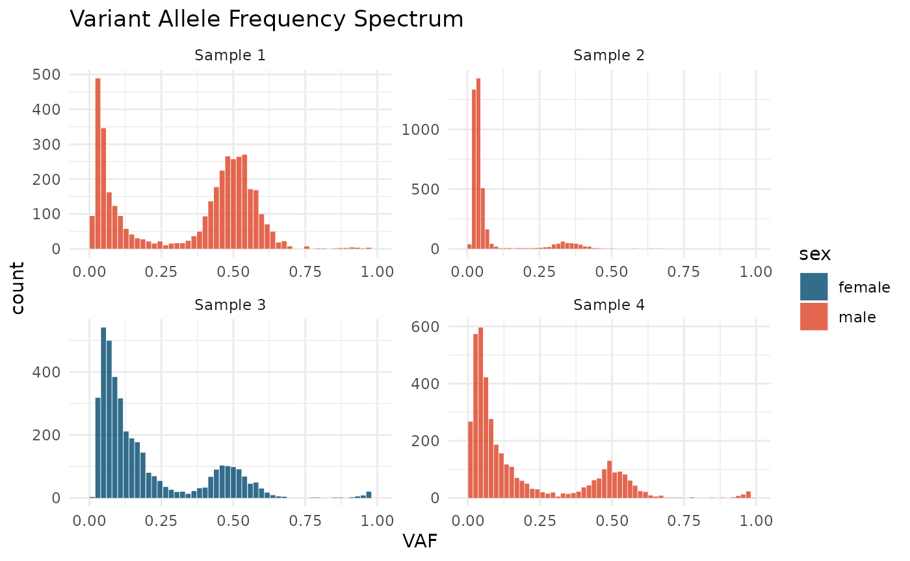
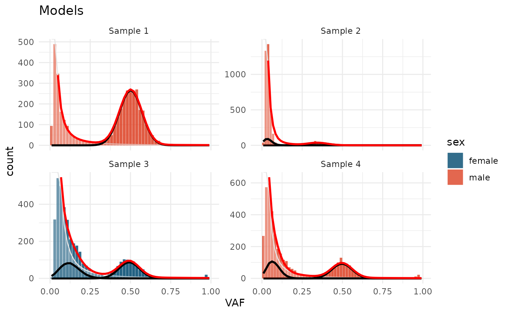

Page under construction
Number of visualization methods were implemented in cevomod.
suppressPackageStartupMessages({
library(cevomod)
library(tidyverse)
})
theme_set(theme_minimal())
cd <- test_data
cd
#> <cevodata> dataset: test_data
#> Genome: unknown
#> SNV assays: snvs (default)
#> CNV assays: cnvs (default)
#> 4 cases, 4 samples, 1 sample per case
#> 16000 mutations total, 4000 +/- 0 mutations per case
#> Active models:VAF distributions
VAF spectra
VAF spectrum is a histogram of the Variant Allele Frequencies, the most straightforward representation of the VAF distribution. It is a base plot for cevomod model representations.
plot_SFS(cd) +
aes(fill = sex) +
scale_fill_manual(values = c(male = "#DD4124", female = "#00496F")) +
labs(title = "Variant Allele Frequency Spectrum")
#> Calculating SFS statistics
#> Calculating f intervals, using VAF column
#> Warning in geom_bar(join_aes(bar_mapping, mapping), stat = "identity", alpha =
#> alpha, : Ignoring unknown aesthetics: width
plot_SFS(cd, geom = "line") +
aes(color = sample_id) +
labs(title = "Variant Allele Frequency Spectrum") +
theme_minimal()
#> Calculating SFS statistics
#> Calculating f intervals, using VAF columnCumulative tails
Cumulative tails show the number of mutations with a frequency higher than f (x-axis). It uses the log-log scale by default, in which the power-law tail with \(\alpha\) equal to 2 is a straight line.
plot_cumulative_tails(cd, size = 0.5, scale_y = FALSE)
#> Calculating cumulative tails, using VAF column
M(f) ~ 1/f
\[M(f) \sim \frac{1}{f}\] statistic was described by Williams et al. (2016). In this representation, the power-law tail with \(\alpha\) equal to 2 is a straight line.
plot_Mf_1f(cd)
#> Mf_1f's not calculated yet. Calculating with default bins
#> Calculating Williams's M(f) ~ 1/f statistics, using VAF column
Mutations
Drier mutations can be easily annotated on the VAF plots using the
layer_mutations() function. By default, only the mutations with HIGH or
MODERATE impact are annotated, but a custom filtering function can be
applied with the filter argument.
plot_SFS(cd) +
layer_mutations(cd, mapping = aes(x = VAF), drivers = "BRCA")
#> Calculating SFS statistics
#> Calculating f intervals, using VAF column
#> Warning in geom_bar(join_aes(bar_mapping, mapping), stat = "identity", alpha =
#> alpha, : Ignoring unknown aesthetics: width
#> Warning in ggrepel::geom_label_repel(mapping = join_aes(default_mapping, :
#> Ignoring unknown aesthetics: shapeAlso, custom list of genes can be provided with the
genes argument:
plot_SFS(cd) +
layer_mutations(cd, mapping = aes(x = VAF), genes = c("TP53", "BRCA1"))
#> Calculating SFS statistics
#> Calculating f intervals, using VAF column
#> Warning in geom_bar(join_aes(bar_mapping, mapping), stat = "identity", alpha =
#> alpha, : Ignoring unknown aesthetics: width
#> Warning in ggrepel::geom_label_repel(mapping = join_aes(default_mapping, :
#> Ignoring unknown aesthetics: shapeMutation plots
Mutations in many genes of interest can be plotted with
plot_mutations():
plot_mutations(cd, drivers = "BRCA")
Models
Active models can be plotted with plot_models()
test_data_fitted |>
plot_models()
#> Warning in geom_bar(join_aes(bar_mapping, mapping), stat = "identity", alpha =
#> alpha, : Ignoring unknown aesthetics: widthThe plots can be ealisy customized:
test_data_fitted |>
plot_models() +
aes(fill = sex) +
scale_fill_manual(values = c(male = "#DD4124", female = "#00496F")) +
labs(title = "Models")
#> Warning in geom_bar(join_aes(bar_mapping, mapping), stat = "identity", alpha =
#> alpha, : Ignoring unknown aesthetics: width
And the model components can be shown or hidden with
show_ arguments
test_data_fitted |>
plot_models(show_subclones = FALSE) +
aes(fill = sex) +
scale_fill_manual(values = c(male = "#DD4124", female = "#00496F")) +
labs(title = "Models")
#> Warning in geom_bar(join_aes(bar_mapping, mapping), stat = "identity", alpha =
#> alpha, : Ignoring unknown aesthetics: width